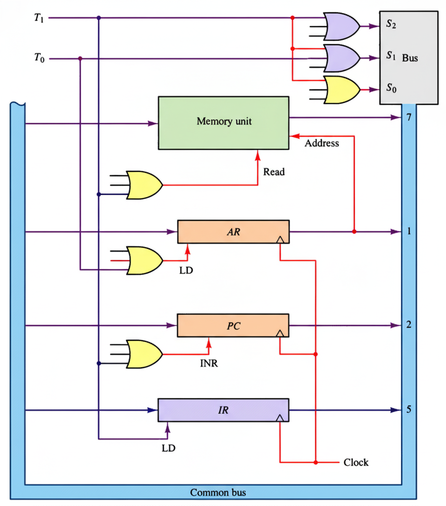
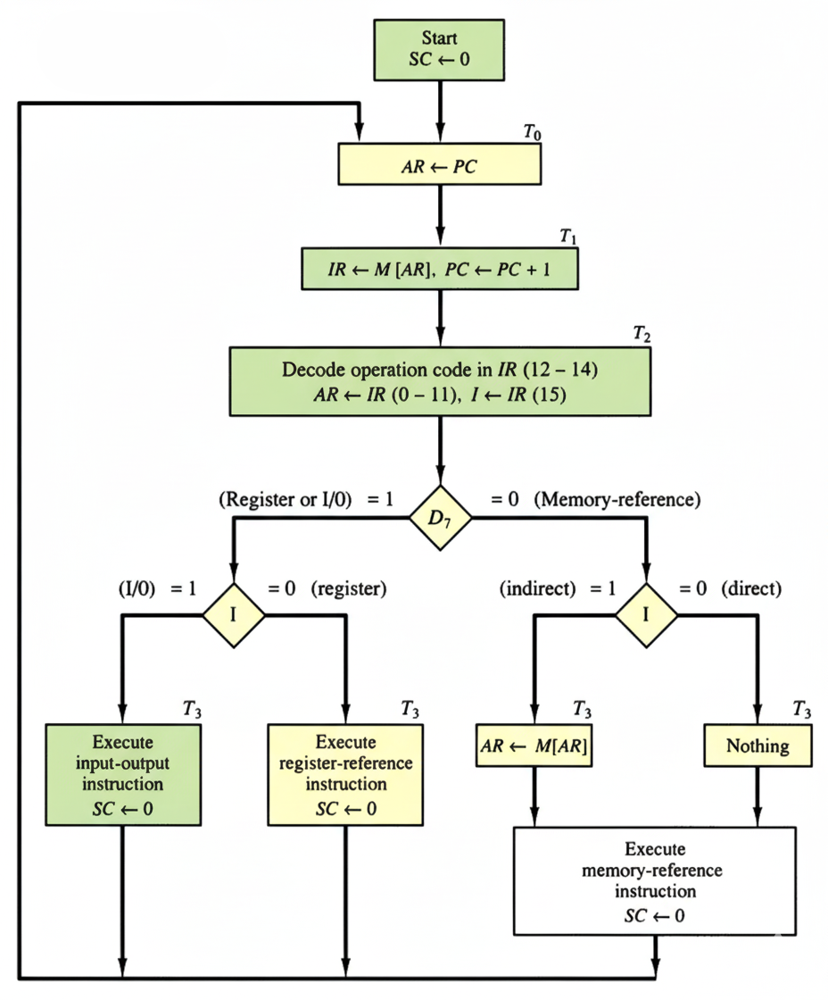

Interactive Learning Experience - Computer Architecture Fundamentals
The fundamental phase where the computer retrieves and interprets the next instruction from memory.

Based on the decoded instruction, determine the execution path and handle addressing modes.
Instructions that require operands from memory. Includes AND, ADD, LDA, STA, BUN, BSA, ISZ.
Operations on processor registers. Examples: CLA, INC, HLT.
Data transfer between processor and I/O devices. Examples: INP, OUT.
For indirect addressing, calculate the actual memory address of the operand.
Perform the actual operation specified by the instruction using the correct operand address.

Holds the address of the next instruction to be executed. Automatically incremented after each fetch.
Stores the current instruction being executed. Contains opcode and address fields.
Holds memory addresses for instruction fetch and operand access.
Controls timing signals (T0, T1, T2...) that orchestrate the instruction cycle phases.
Direct addressing uses the address directly; indirect requires an additional memory access to get the actual address.
T0, T1, T2, T3, T4... control the sequence of microoperations within each instruction cycle.